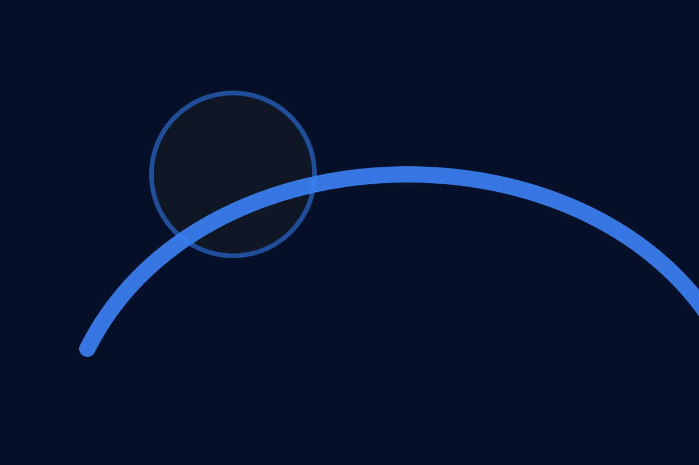

Blue Lava Comunidade
Uma comunidade para visão, crescimento e conexão.
Um espaço calmo e moderno para partilhar histórias, encontrar recursos e criar ligações.

Sobre
A Blue Lava Comunidade é um espaço calmo e moderno para partilhar, aprender e prestar apoio mútuo sobre saúde mental e neurodiversidade. Focamo-nos na conexão humana, em recursos práticos e em conversas compassivas.
Mantém-te em contacto
Queres ajudar ou saber mais? Contacta-nos ou junta-te à comunidade.